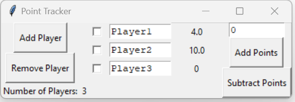
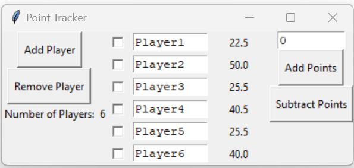

Point Tracker GUI in Python
During the pandemic, I started playing games with some of my friends on Zoom. For a while I would just keep track of everyone's points with good old fashioned pen and paper, which worked but was also not the cleanest method. As I started to teach myself programming in Python I thought a good project for learning how to make a GUI (Graphical User Interface) would be to design a point tracking application for these online game sessions.
The app was made using the Tkinter package, and can be found on my Github page. While the programming is maybe not the most elegant (I mean this was only a couple of months into learning Python), I am quite pleased with how the app came out. One of the features I am most proud of is being able to dynamically add and remove players from the game, which is nice if people come and go throughout the gaming session. Future improvements to the point tracker would be adding a plot of every player's score throughout the game and being able to save a screenshot of the scoreboard. While these additions would be nice, the app works for me as is so don't expect major changes anytime soon.
 